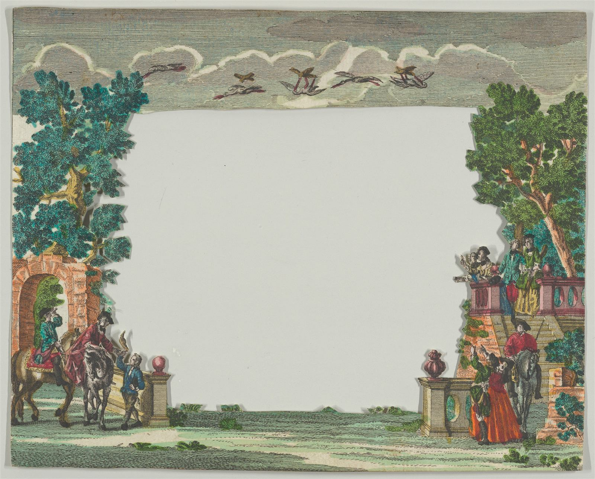
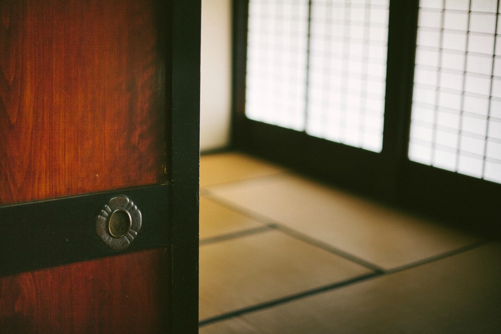

古い家で、物語がはじまる
梁の残る古民家の一室で、紙芝居の幕が開き、絵本のページがめくられる。童話caféは、建物そのものが持つ時間の重みと、店主がつむぐおとぎ話めいたひとときが重なり合う場所です。お料理だけでなく、この「物語の時間」こそが、童話caféならではの体験です。
※引用内のお客様の声は、実際にいただいた口コミを匿名化・一部要約してご紹介しています(原文の逐語引用ではありません)。

※挿絵はフリー素材のイメージです
その日だけの、紙芝居
童話caféの紙芝居・人形劇は、店主自らが読み手を務めるパフォーマンスです。紙芝居がとても上手で、大人も子供も目が釘付けになった、というお声をいただいています。
「紙芝居がすっごく上手で、大人も子供も目が釘付けでした。プロの紙芝居!見る価値ありです!」
読み手やお話は、その日によって変わります。同じ紙芝居は二度とない、というのも童話caféらしいところ。だからこそ、何度訪れても新しい物語に出会えます。
さらに、ある日あるお客様が当日になって紙芝居を見てみたいとお願いしたところ、営業時間外にもかかわらず快くご対応いただいたという、あたたかい逸話も残っています。こうした柔らかな対応も、この店の人柄を物語っています。
紙芝居・人形劇の開催日・開催時間は【ご確認中】です。ご来店前にInstagramでのご確認・ご相談をおすすめします。
※写真はフリー素材のイメージです
絵本に囲まれて、ひとりの時間も
店内の一角には、絵本がずらりと並ぶ、シックな読書スペースがあります。お一人でのご来店でも気兼ねなく過ごせる空間です。本のページをめくる音だけが響く、静かなひとときをどうぞ。
「絵本のあるシックな席で本を読みながらコーヒーとデザートをいただきました。1人で来たけど、ゆっくりできました」

※写真はフリー素材のイメージです
小さなお子さまとも
童話caféには子供用の椅子もご用意しており、小さなお子さま連れのご家族にも安心してお過ごしいただけます。紙芝居や人形劇は、お子さまだけでなく大人も思わず引き込まれるもの。親子で同じ物語に見入る、そんなひとときをぜひ味わってください。
あたたかいおもてなし
営業日の確認やご予約のご相談は、Instagramメッセージへのご連絡から。ひとつひとつのご相談に丁寧に応えてくれる店主の人柄も、童話caféの温かさを形づくっています。
「インスタメッセージでの営業日確認や予約も即対応、当日に時間外の紙芝居も快く受けてくださって、とても親切丁寧です」